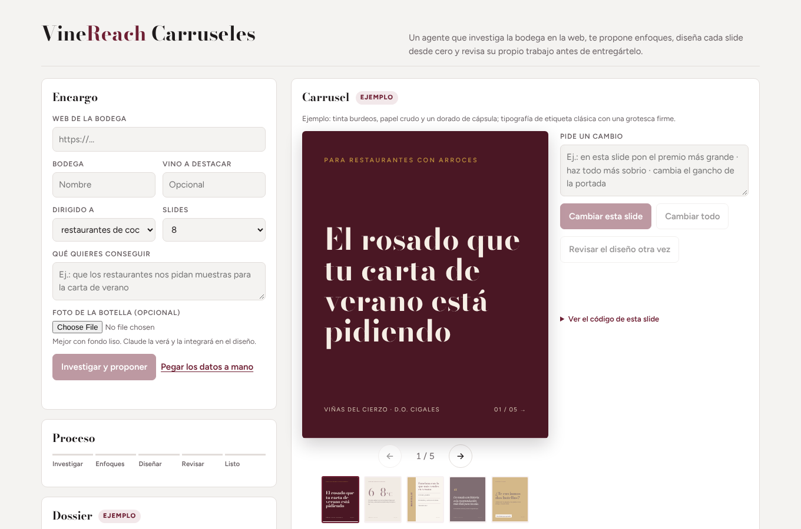
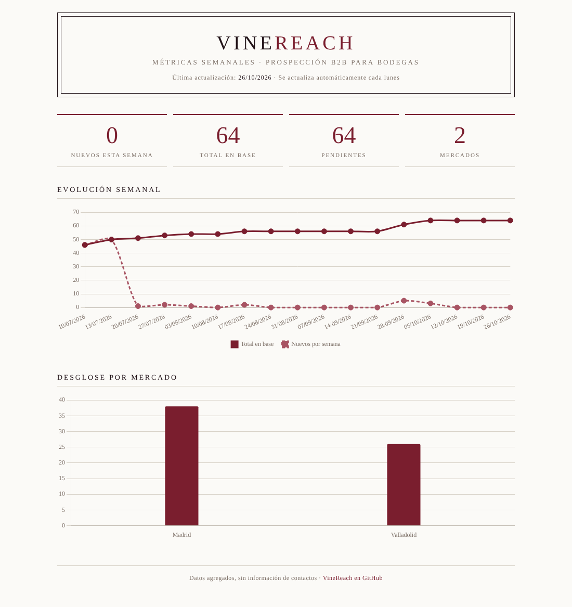

Caso de estudio · IA aplicada a ventas B2B
Un equipo comercial con IA para bodegas que venden a hostelería
VineReach hace el trabajo previo a la venta: crea contenido para LinkedIn a partir de la identidad de cada bodega, encuentra restaurantes con potencial, redacta el primer contacto y mide el resultado cada semana. El comercial sigue decidiendo; VineReach le quita horas de trabajo repetitivo.
Datos del último informe semanal automático.
El problema
Las bodegas no tienen un problema de producto. Tienen un problema de proceso.
Prospección a ciegas
El comercial elige a quién llamar por intuición o por un Excel que nadie actualiza.
Mensajes genéricos
El primer contacto suena a plantilla y el restaurante lo ignora.
Sin visibilidad
Nadie sabe cuántos contactos se hicieron esta semana ni qué funcionó.
La solución
Tres módulos, un mismo embudo
El contenido atrae, la prospección abre conversaciones y el reporting dice qué está funcionando.
Módulo 01 · Contenido
Un agente que diseña cada carrusel desde cero
No rellena una plantilla: lee la web de la bodega, decide el enfoque y crea un sistema visual propio para ella. Después revisa su trabajo mirando el resultado, como haría un director de arte.
- InvestigaLee la web oficial y busca premios y prensa. Solo usa hechos con fuente.
- Propone tres enfoquesCada uno pensado para el negocio del restaurante, no solo para el vino.
- Diseña cada slideComposición distinta por slide, con la paleta y la tipografía de la marca.
- Se autorrevisaRenderiza todas las slides, las mira en imagen y corrige textos cortados o contraste.
- Acepta cambios por chat«Haz la portada más sobria», «pon el premio más grande».
- Exporta a PDFEl formato que LinkedIn publica como documento deslizable.

Ejemplo con una bodega ficticia, Viñas del Cierzo (D.O. Cigales). Stack: Claude (con la cuenta del usuario, sin coste de API), Firecrawl para leer webs, html2canvas y jsPDF.
Módulo 02 · Prospección
Restaurantes nuevos cada lunes, con el primer email ya escrito
Un escenario de Make busca en Google Places, descarta los que ya están en la base y pide a un LLM un resumen, un asunto y un email personalizado para cada uno. La bodega revisa y aprueba antes de enviar.
«Estimado equipo de restaurante, me dirijo a ustedes desde una bodega de Ribera del Duero, ofreciendo vinos de alta calidad que podrían complementar perfectamente su carta, me gustaría concertar una reunión para discutir posibles colaboraciones.»
Correcto pero intercambiable: valdría para cualquier restaurante y cualquier bodega. Es justo el email que se ignora.
- Reglas duras en el prompt: prohibido «Estimado equipo», «alta calidad» o «me dirijo a ustedes». Cada email tiene que citar un detalle verificable del restaurante y cerrar con algo de bajo compromiso (10 minutos o dos botellas de muestra).
- Diagnóstico con datos: el informe semanal mostraba 0 restaurantes nuevos en 6 de 9 semanas. La causa: 6 búsquedas fijas que Google respondía siempre con los mismos 20 resultados. Ahora rotan 24 búsquedas.
- Menos coste: el filtro de duplicados se ejecuta antes de llamar al LLM, así no se redactan emails que se van a descartar.
Módulo 03 · Reporting
Cada lunes, un informe que nadie tiene que preparar
Una hora después de la prospección, otro escenario cuenta el embudo, desglosa por mercado y pide al LLM un resumen ejecutivo con una recomendación concreta. Llega por email y alimenta un dashboard público con datos agregados, sin información de contactos.

Decisiones y aprendizajes
Lo que haría igual y lo que aprendí
La IA no inventa datos
Todo lo que dicen los carruseles y los emails sale de una fuente: la web de la bodega, Google Places o lo que escribe el cliente. Lo que falta se queda como hueco a rellenar, no como cifra inventada.
Siempre hay un humano antes de enviar
El sistema prepara y propone; la bodega aprueba. Un email malo a un restaurante cuesta más que el tiempo que ahorra.
Medir es lo que encontró el fallo
Sin el informe semanal, la prospección habría seguido «funcionando» meses sin encontrar a nadie nuevo.
Coste casi cero
Herramientas gratuitas o ya contratadas: Make, Groq, Resend, Google Sheets y el plan gratuito de Google Places. El agente de contenido usa la cuenta de Claude de quien lo abre.
Siguiente paso
Del embudo de prueba a una bodega real
Hoy el sistema encuentra restaurantes y redacta el contacto, pero todavía no envía: no hay ninguna bodega cliente que firme esos emails. Lo siguiente es cerrar el embudo (aprobación, envío y seguimiento) y probarlo durante un mes con una bodega piloto.
Sobre mí
Pablo Orihuela
Vengo de ventas y marketing, y uso la IA para automatizar lo que más tiempo le quita a un equipo comercial. VineReach lo he diseñado y construido yo, usando Claude como herramienta de desarrollo.
- Base
- Valladolid, España
- Formación
- Máster en IA aplicada a negocio (IEBS) · Grado Superior en Ventas · Grado Superior en Marketing y Publicidad
- Busco
- Puestos de ventas, growth o automatización con IA
- Contacto
- github.com/pablorii